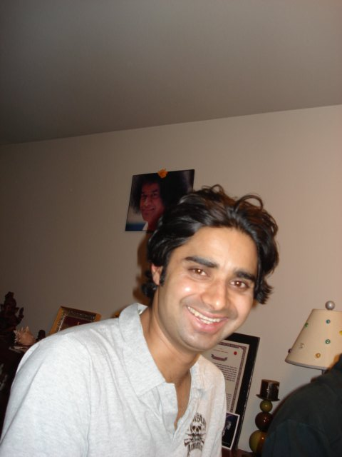

About Me
I was born and raised in Nepal, a landlocked country with beautiful hills, mountains, woods and rivers. I spent about 5+ years in teaching back home - teaching social sciences. I was not raised with the fancy technology and computers - first time I saw a computer was, if I could recollect correctly, when I was in 10th grade. Sounds surreal - isn't it? First time I created my email account was when I was doing bachelors in education.
Now, looking back I am greatly amazed - seeing technologies being advanced, developed, and updated rapidly. And now here I am trying to break into IT industry - I know I am going to have to push real hard to get that first break as a web developer. And I'm so ready to push hard - I have always been an upderdog but with hard work, grit, and perseverance - I have always excelled at my job. And with the same comittments, I'm going to succeed in this new journey of mine.
Currently, I'm working as a test engineer - completely manual role. But I'm willing to switch my career into web development.